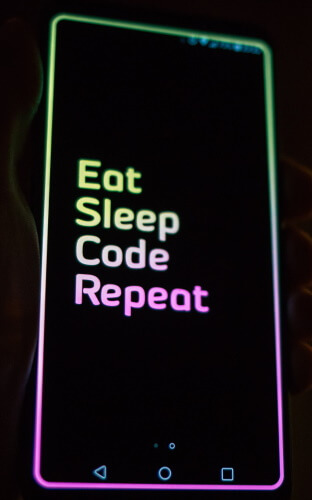

Looking for a full stack developer
or
for a software architect
What is a software architect without knowing all development newest technologies.
What is a lead-developer whithout knowledge of software architecture.


Why choose, You can have both.
I can offer you both.
Based on a clear and services seperated design, I create an cost efficient environment, easy to maintain and expand.
That concept and the ability to program it, is in my DNA.
Note: I am not happy only working in archaeological code. Razor and blazor are my goals for every new development along with c# based on .net 6 or higher.
Curious
Contact me for more information by
Linkedin